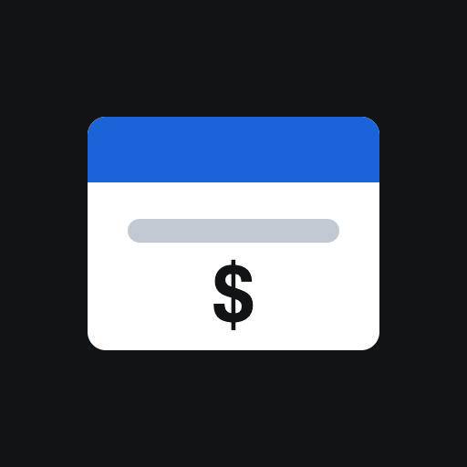

Use BLE Link
Confirmed on this phone (2026-09-11): it prints, and it reopens straight on Price Tags. That is the whole setup — tap its icon and you are in the app.
1. Install BLE Link — Web BLE Browser (free, needs iOS 16.4 or newer).
2. Open it and type bbass07.github.io/price-tags/ in the address bar, once.
3. From then on, tap the BLE Link icon. It comes back to Price Tags on its own.
No Shortcut, no Home Screen trick, and nothing to redo. BLE Link keeps no tabs, so nothing piles up behind the app. It has no fullscreen either, so its address bar stays on screen — that is the price, and no iPhone browser can do better.
Do not use Safari’s “Add to Home Screen”
It makes a convincing looking app, but it runs on Safari’s engine, which has no Bluetooth at all. It will never find the printer.
The old Bluefy route, kept in case it is ever needed
Bluefy also prints, and unlike BLE Link it has a fullscreen button — but it forgets that setting on every launch, and it keeps every past session as a tab that the shortcut below adds to rather than reuses. That is why the phone moved to BLE Link.
Bluefy has no “Add to Home Screen” of its own, so an iOS Shortcut wraps its deep link in an icon:
1. Save the icon — long-press it, then Add to Photos.

2. Copy the link:
3. Open Shortcuts → + → Add Action. Search for Open URLs and pick it. Tap the URL field and paste.
4. Tap the shortcut’s name at the top → Rename it Price Tags, then Add to Home Screen. Tap the icon square → Choose Photo and pick the icon you saved.
Retesting the link formats
Only a link that lands on a page showing its own number actually carries the address; anything else opened the app and threw the address away. Tap them one at a time. Bluefy’s number 3 was the winner last time. BLE Link (11–16) was never needed — it reopens on the right page by itself — so these are only worth trying if that ever stops being true.